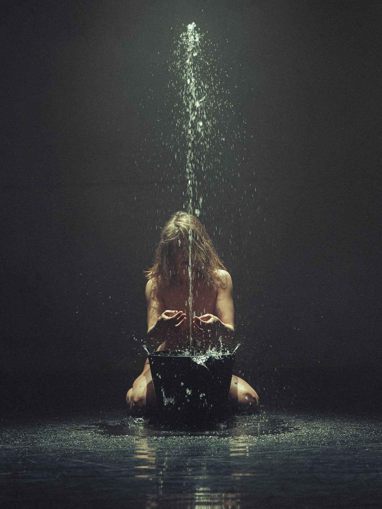
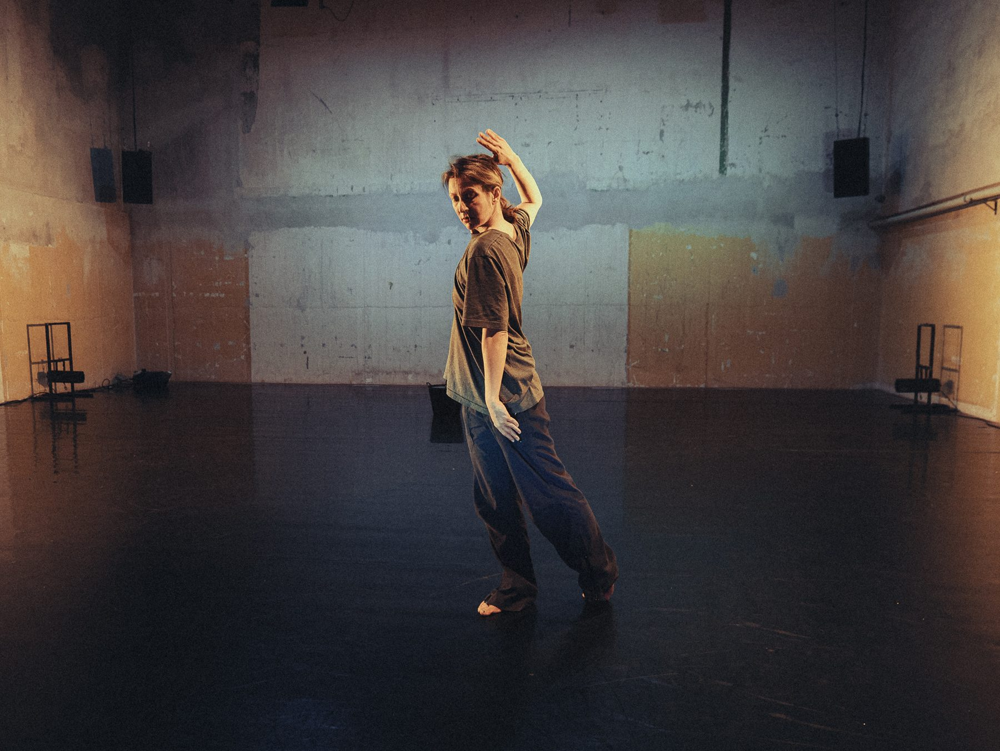
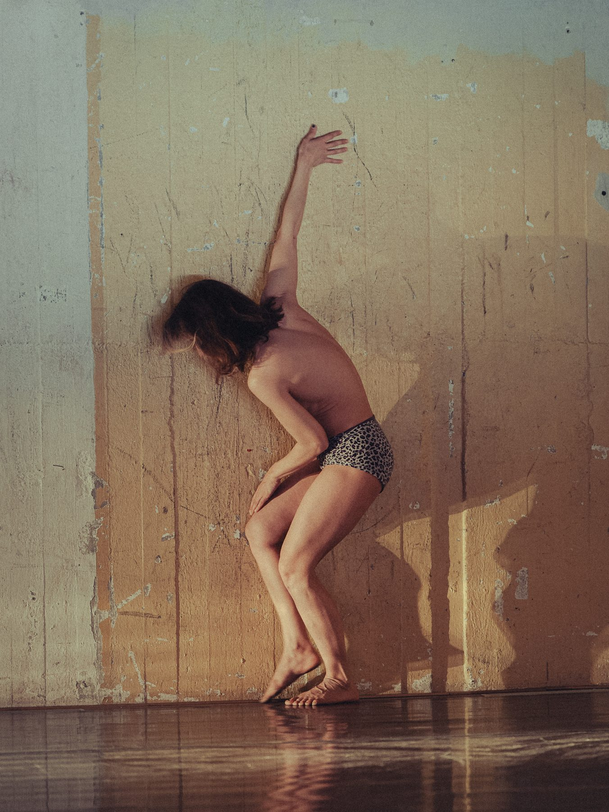
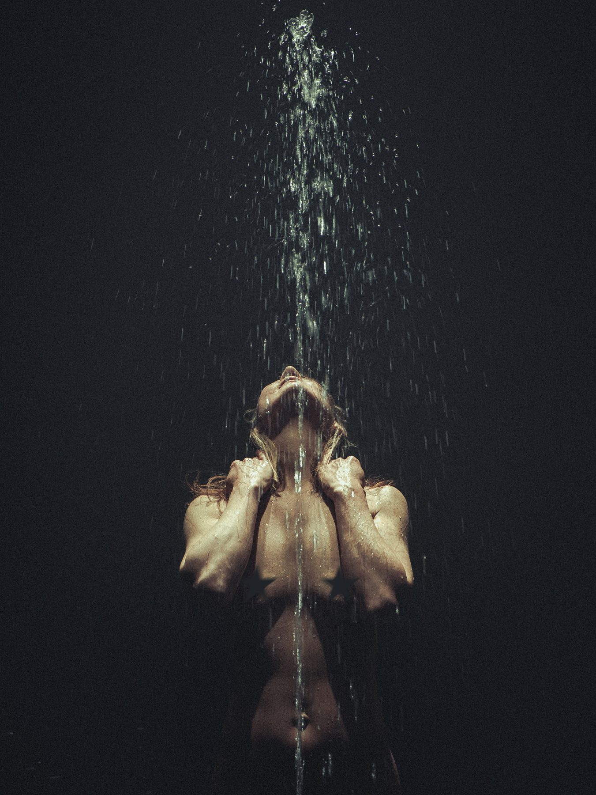
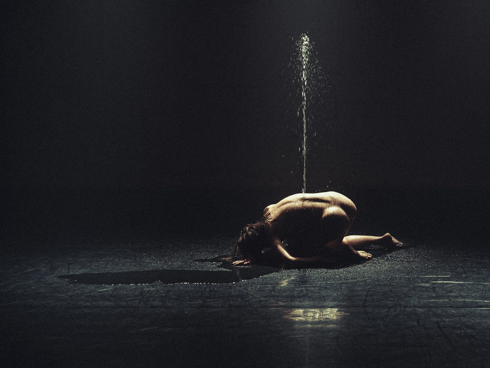

I Love When You're Watching me
“In I Love When You’re Watching Me, I dance solo in intimate connection with silence, music, dance, myself, and the audience, born out of a desire to open spaces of playful intimacy, where you can dwell and dissolve in ephemerality. I can easily appear and disappear, while at the same time always being here.”
— Zhana Pencheva
A dance work by Zhana Penkova Pencheva
In collaboration with Ralitsa Toneva and Tsvetan Momchilov
Dance: Zhana Pencheva
Music: Tsvetan Momchilov
Light design & stage: Ralitsa Toneva
Photo & video documentation: Gergely
Co-production by Garage Collective, ICC and Zhana Pencheva. With the partnership of Toplocentrala, Sofia.
Weld, Stockholm 2025




